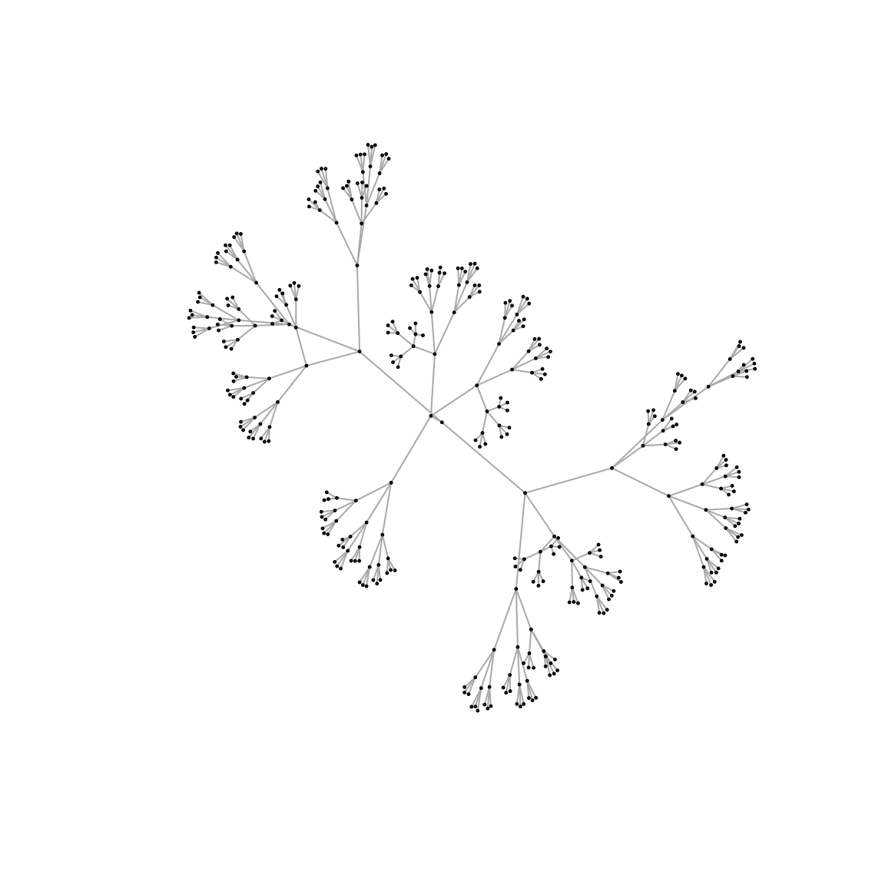
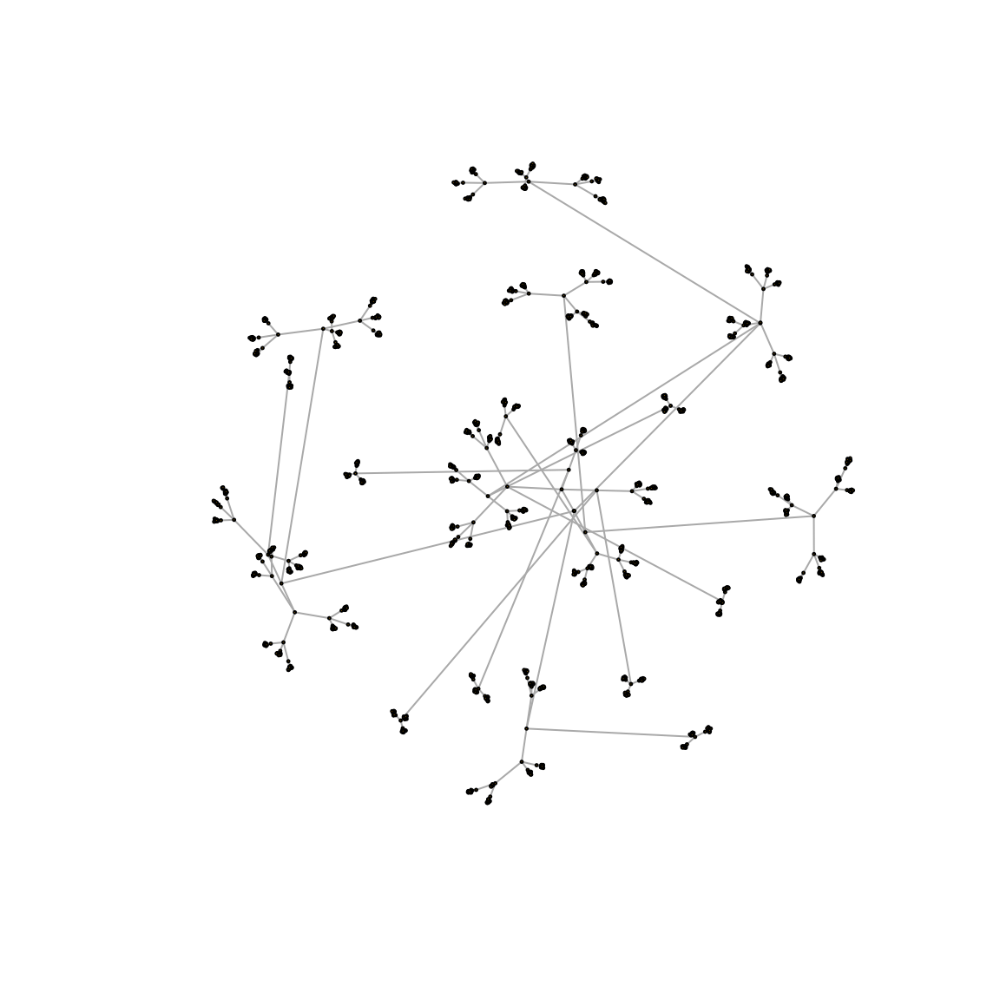
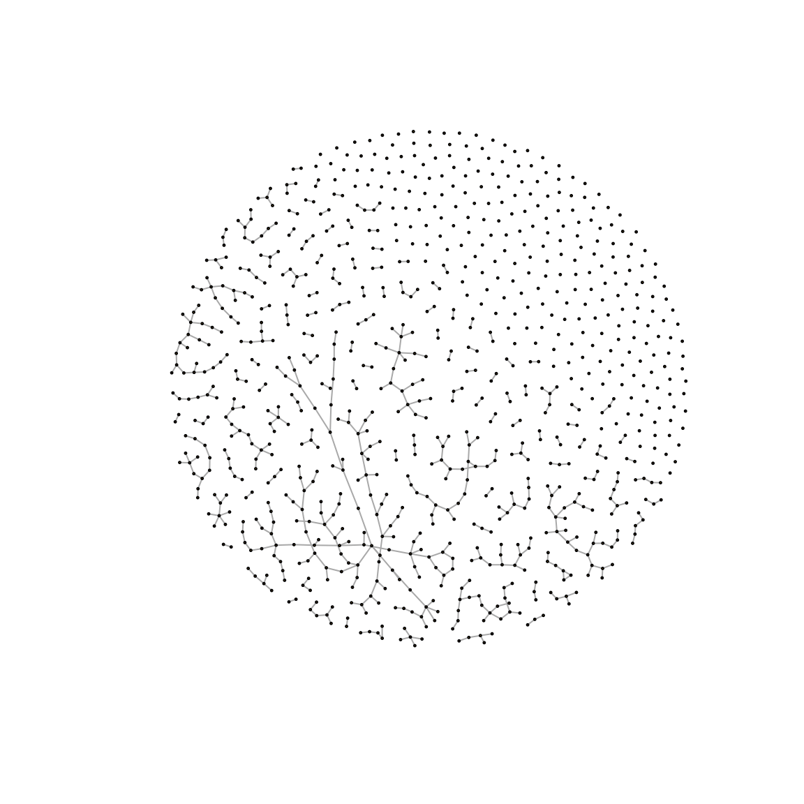

NetdisStepByStep.RmdThis vignette explains some inner calculations of Netdis which the user does not need to go through, however, we explain them here for those users that may want to use Netdis in a modular fashion.
For a simple Netdis function call see instead “Simple and quick (default) usage 1: pairwise comparisons”.
For other vignettes in this package see the “Menu”.
(Extracted from Ali et al. (2014)): Netdis counts small subgraphs \(w\) on \(k\) nodes for all 2-step ego-networks, \(k=3,4,5\). These counts are centred by subtracting the expected number of counts \(E_w\). These centred counts of each network are then compared among one another thus leading to the Netdis statistic.
The selection of a gold-standard graph as a substitute for \(E_w\) can be done when such graph is known to be a good proxy for \(E_w\), or alternatively as a good reference point for the comparison. This option will focus on detecting discrepancies between the networks relative to the ego-network structure of the reference network / gold-standard summarized in \(E_w\).
Let \(N_{w,i}(G)\) be the number of induced occurrences of small graphs \(w\) in the 2-step ego-network of vertex \(i\). Now, bin all 2-step ego-networks of network \(G\) according to their network density. Let \(E_w(G,\rho)\) be the expected number of occurrences of \(w\) in an ego-network whose density falls in density bin \(\rho\). For a given network \(G\) compute the centred subgraph counts as \[ S_w(G)=\sum\limits_{i }{\bigg (N_{w,i}(G)- E_w(G, \rho(i)) \bigg )}, \] where \(i\) is a node in \(G\) and \(\rho(i)\) the density bin of the 2-step ego-network of node \(i\).
Now, to compare networks \(G_1\) and \(G_2\), set \[ \displaystyle netD_2^S(k) = \tfrac{1}{ \sqrt{ M(k)} } \sum\limits_{w \in A(k)} \bigg ({ \tfrac{S_w(G_1) S_w(G_2)} {\sqrt{S_w(G_1)^2 + S_w(G_2)^2}} }\bigg ), \quad k=3,4, 5, \] where \(A(k)\) is the set of connected subgraphs of size \(k\), and where \(M(k)\) is a normalising constant so that \(netD_2^S(k)\in[-1,1]\). \(M(k)\) is equal to \[ M(k) = \sum\limits_{w \in A(k)} \left( \tfrac{ S_w(G_1)^2 }{\sqrt{S_w(G_1)^2 + S_w(G_2)^2}} \right) \sum\limits_{w \in A(k)} \left(\tfrac{ S_w(G_2)^2 } {\sqrt{S_w(G_1)^2 + S_w(G_2)^2}} \right) . \] The corresponding Netdis statistic is defined as \[Netdis(k)=netd_2^S(k)=\tfrac{1}{2}(1-netD_2^S(k)) \in [0,1].\] Small values of Netdis suggest higher `similarity’ between the networks. By default Netdis uses subgraphs on \(k=4\) nodes.
Generation of tree-like networks with 400 nodes and 1600 nodes.
# Create networks
set.seed(34)
gTree_1 <- igraph::as.undirected( make_tree(n = 20^2,children = 3) )
gTree_2 <- igraph::as.undirected( make_tree(n = 40^2,children = 3) )
plot(gTree_1,vertex.size=0.8,vertex.label=NA)
plot(gTree_2,vertex.size=0.8,vertex.label=NA)
Netdis uses some mostly internal parameters that define the size of the subgraphs/graphlets that are going to be used, as well as the length of the ego neighbourhood, the minimum size considered for the resulting ego-networks, and finally some parameters that control an ego-network binning function. By default, Netdis considers the following setup:
# Maximum subgraph size to calculate counts and netdis statistic for
max_subgraph_size <- 4
# Ego-network neighbourhood size
neighbourhood_size <- 2
# Minimum size of ego-networks to consider
min_ego_nodes <- 3
min_ego_edges <- 1
# Ego-network density binning parameters. Here, the minimum number of ego-networks per bin and the starting number of bins
min_bin_count <- 5
num_bins <- 100One of the first steps in Netdis is the extraction of all ego-networks in each of the query networks:
# Get ego-networks for query graphs
ego_1 <- make_named_ego_graph(gTree_1,
order = neighbourhood_size,
min_ego_nodes = min_ego_nodes,
min_ego_edges = min_ego_edges)
ego_2 <- make_named_ego_graph(gTree_2,
order = neighbourhood_size,
min_ego_nodes = min_ego_nodes,
min_ego_edges = min_ego_edges)
tail(ego_1,n=2)
#> [[1]]
#> IGRAPH 1cfafa4 U--- 5 4 -- Tree
#> + attr: name (g/c), children (g/n), mode (g/c)
#> + edges from 1cfafa4:
#> [1] 1--2 2--3 2--4 2--5
#>
#> [[2]]
#> IGRAPH 9be9d13 U--- 5 4 -- Tree
#> + attr: name (g/c), children (g/n), mode (g/c)
#> + edges from 9be9d13:
#> [1] 1--2 2--3 2--4 2--5
tail(ego_2,n=2)
#> [[1]]
#> IGRAPH 4d594c1 U--- 5 4 -- Tree
#> + attr: name (g/c), children (g/n), mode (g/c)
#> + edges from 4d594c1:
#> [1] 1--2 2--3 2--4 2--5
#>
#> [[2]]
#> IGRAPH dcec58e U--- 5 4 -- Tree
#> + attr: name (g/c), children (g/n), mode (g/c)
#> + edges from dcec58e:
#> [1] 1--2 2--3 2--4 2--5Once the ego-networks are extracted, the subgraph counts for all ego-network are obtained for each network being compared:
# Subgraphs counts for ego-networks in query graphs
subgraph_counts_1 <- ego_to_graphlet_counts(ego_networks = ego_1, max_graphlet_size = max_subgraph_size)
subgraph_counts_2 <- ego_to_graphlet_counts(ego_networks = ego_2, max_graphlet_size = max_subgraph_size)
tail(subgraph_counts_1)
#> N G0 G1 G2 G3 G4 G5 G6 G7 G8
#> [395,] 5 4 6 0 0 4 0 0 0 0
#> [396,] 5 4 6 0 0 4 0 0 0 0
#> [397,] 5 4 6 0 0 4 0 0 0 0
#> [398,] 5 4 6 0 0 4 0 0 0 0
#> [399,] 5 4 6 0 0 4 0 0 0 0
#> [400,] 5 4 6 0 0 4 0 0 0 0
tail(subgraph_counts_2)
#> N G0 G1 G2 G3 G4 G5 G6 G7 G8
#> [1595,] 5 4 6 0 0 4 0 0 0 0
#> [1596,] 5 4 6 0 0 4 0 0 0 0
#> [1597,] 5 4 6 0 0 4 0 0 0 0
#> [1598,] 5 4 6 0 0 4 0 0 0 0
#> [1599,] 5 4 6 0 0 4 0 0 0 0
#> [1600,] 5 4 6 0 0 4 0 0 0 0In Netdis users can consider the following variants:
In this vignette the complete steps are given for “Expectation via a gold-standard network”. The step by step computation of Netdis-GP is in Netdis-GP: step by step.
For this case the user must provide the gold-standard network of their choosing. This network will be used as a comparison reference point by Netdis.
The following considers a tree-like network with 900 nodes as the gold-standard.
# Network used as gold-standard
gst_1 <- erdos.renyi.game(n = 30^2,p.or.m = graph.density(graph = gTree_2))
plot(gst_1,vertex.size=0.8,vertex.label=NA)
To calculate the expected counts, \(E_w\), the counts of the ego-networks of the gold-standard network need to be obtained first:
# Obtain subgraph counts and binning for gold-standard
ego_gst_1 <- make_named_ego_graph(graph = gst_1,
order = neighbourhood_size,
min_ego_nodes = min_ego_nodes,
min_ego_edges = min_ego_edges)
subgraph_counts_gst_1 <- ego_to_graphlet_counts(ego_networks = ego_gst_1,
max_graphlet_size = max_subgraph_size)
head(subgraph_counts_gst_1)
#> N G0 G1 G2 G3 G4 G5 G6 G7 G8
#> [1,] 5 4 3 0 2 0 0 0 0 0
#> [2,] 8 7 10 0 5 5 0 0 0 0
#> [3,] 3 2 1 0 0 0 0 0 0 0
#> [4,] 11 10 15 0 18 8 0 0 0 0
#> [5,] 3 2 1 0 0 0 0 0 0 0
#> [6,] 3 2 1 0 0 0 0 0 0 0Subsequently, these ego-networks are binned according to their edge density:
densities_gst_1<- ego_network_density(graphlet_counts = subgraph_counts_gst_1)
# Adaptively bin ego-network densities
binned_densities_gst_1 <- binned_densities_adaptive(densities = densities_gst_1,
min_counts_per_interval = min_bin_count,
num_intervals = num_bins)
str(binned_densities_gst_1)
#> List of 3
#> $ densities : num [1:516] 0.4 0.25 0.667 0.182 0.667 ...
#> $ interval_indexes: int [1:516] 7 4 9 1 9 9 9 9 8 6 ...
#> $ breaks : num [1:10] 0.167 0.187 0.202 0.227 0.252 ...\(E_w\) is estimated based on the average subgraph counts of ego-networks per density bin for each given subgraph. However, as the query networks and the gold-standard may have different number of nodes, the counts of the gold-standard network are first scaled to a “standard” or “canonical” scale from which they can be scaled back towards networks of different sizes. The following code first shows the computation of the subgraph counts for the ego-networks in the gold-standard network with their corresponding scaling:
# Scale ego-network subgraph counts by dividing by the total number of k-tuples in the
# ego-network (where k is the subgraph size)
scaled_subgraph_counts_ref <- scale_graphlet_counts_ego(graphlet_counts = subgraph_counts_gst_1,
max_graphlet_size =max_subgraph_size)
str(scaled_subgraph_counts_ref)
#> num [1:516, 1:9] 0.4 0.25 0.667 0.182 0.667 ...
#> - attr(*, "dimnames")=List of 2
#> ..$ : NULL
#> ..$ : chr [1:9] "G0" "G1" "G2" "G3" ...Finally, the standard or canonical \(E_w\) can be obtained by taking the average per bin of the scaled subgraph counts:
# Average of the scaled reference subgraph counts in each density bin
ref_binned_canonical_subgraph_counts <- mean_density_binned_graphlet_counts(graphlet_counts = scaled_subgraph_counts_ref, density_interval_indexes = binned_densities_gst_1$interval_indexes)
ref_binned_canonical_subgraph_counts
#> G0 G1 G2 G3 G4 G5 G6 G7 G8
#> 1 0.1774892 0.09393939 0.0000000000 0.05108225 0.02871573 0 0.0000000000 0 0
#> 2 0.2000000 0.10972222 0.0000000000 0.06666667 0.03095238 0 0.0000000000 0 0
#> 3 0.2222222 0.14732143 0.0000000000 0.07738095 0.06001984 0 0.0000000000 0 0
#> 4 0.2500000 0.17028061 0.0000000000 0.10204082 0.06224490 0 0.0000000000 0 0
#> 5 0.2857143 0.21879699 0.0000000000 0.13984962 0.09624060 0 0.0000000000 0 0
#> 6 0.3333333 0.31393443 0.0000000000 0.18579235 0.20655738 0 0.0000000000 0 0
#> 7 0.4000000 0.44382022 0.0005617978 0.25842697 0.35955056 0 0.0007490637 0 0
#> 8 0.5000000 0.67317073 0.0008130081 0.29593496 0.69918699 0 0.0016260163 0 0
#> 9 0.6666667 0.99324324 0.0033783784 0.00000000 0.00000000 0 0.0135135135 0 0After obtaining the average scaled subgraph counts per density bin, the subgraph counts of the query networks can be centred:
# Scale the reference counts of the gold-standard network to the sizes of each of the query ego-networks.
exp_subgraph_counts_1 <- netdis_expected_counts(graphlet_counts = subgraph_counts_1,
density_breaks = binned_densities_gst_1$breaks,
density_binned_reference_counts = ref_binned_canonical_subgraph_counts,
max_graphlet_size = max_subgraph_size,
scale_fn=count_graphlet_tuples)
exp_subgraph_counts_2 <- netdis_expected_counts(graphlet_counts = subgraph_counts_2,
density_breaks = binned_densities_gst_1$breaks,
density_binned_reference_counts = ref_binned_canonical_subgraph_counts,
max_graphlet_size = max_subgraph_size,
scale_fn=count_graphlet_tuples)
# Centre subgraph counts by subtracting expected counts
centred_subgraph_counts_1 <- netdis_subtract_exp_counts(graphlet_counts = subgraph_counts_1,
exp_graphlet_counts = exp_subgraph_counts_1,
max_graphlet_size = max_subgraph_size)
centred_subgraph_counts_2 <- netdis_subtract_exp_counts(graphlet_counts = subgraph_counts_2,
exp_graphlet_counts = exp_subgraph_counts_2,
max_graphlet_size = max_subgraph_size)
tail(centred_subgraph_counts_1)
#> G0 G1 G2 G3 G4 G5 G6 G7 G8
#> [395,] 0 1.561798 -0.005617978 -1.292135 2.202247 0 -0.003745318 0 0
#> [396,] 0 1.561798 -0.005617978 -1.292135 2.202247 0 -0.003745318 0 0
#> [397,] 0 1.561798 -0.005617978 -1.292135 2.202247 0 -0.003745318 0 0
#> [398,] 0 1.561798 -0.005617978 -1.292135 2.202247 0 -0.003745318 0 0
#> [399,] 0 1.561798 -0.005617978 -1.292135 2.202247 0 -0.003745318 0 0
#> [400,] 0 1.561798 -0.005617978 -1.292135 2.202247 0 -0.003745318 0 0
tail(centred_subgraph_counts_2)
#> G0 G1 G2 G3 G4 G5 G6 G7 G8
#> [1595,] 0 1.561798 -0.005617978 -1.292135 2.202247 0 -0.003745318 0 0
#> [1596,] 0 1.561798 -0.005617978 -1.292135 2.202247 0 -0.003745318 0 0
#> [1597,] 0 1.561798 -0.005617978 -1.292135 2.202247 0 -0.003745318 0 0
#> [1598,] 0 1.561798 -0.005617978 -1.292135 2.202247 0 -0.003745318 0 0
#> [1599,] 0 1.561798 -0.005617978 -1.292135 2.202247 0 -0.003745318 0 0
#> [1600,] 0 1.561798 -0.005617978 -1.292135 2.202247 0 -0.003745318 0 0After the counts are centred, the total count is computed for each subgraph in each query network:
sum_subgraph_counts_1 <- colSums(centred_subgraph_counts_1)
sum_subgraph_counts_1
#> G0 G1 G2 G3 G4 G5 G6
#> -346.2814 -801.5149 -1.5000 -3801.1775 -1134.8427 0.0000 -1.0000
#> G7 G8
#> 0.0000 0.0000
sum_subgraph_counts_2 <- colSums(centred_subgraph_counts_2)
sum_subgraph_counts_2
#> G0 G1 G2 G3 G4
#> -1428.467532 -3399.955521 -5.994382 -15721.318255 -4831.197918
#> G5 G6 G7 G8
#> 0.000000 -3.996255 0.000000 0.000000Finally, the total centred counts can be used to obtain the Netdis statistic:
netdis_result <- netdis_uptok(centred_graphlet_count_vector_1 = sum_subgraph_counts_1,
centred_graphlet_count_vector_2 = sum_subgraph_counts_2,
max_graphlet_size = max_subgraph_size)
print(netdis_result)
#> netdis3 netdis4
#> 1.653858e-06 3.705944e-05W. Ali, T. Rito, G. Reinert, F. Sun, and C. M. Deane. Alignment-free protein interaction network comparison. Bioinformatics, 30:i430–i437, 2014.
L. Ospina-Forero, C. M. Deane, and G. Reinert. Assessment of model fit via network comparison methods based on subgraph counts. Journal of Complex Networks, page cny017, August 2018.
A. E. Wegner, L. Ospina-Forero, R. E. Gaunt, C. M. Deane, and G. Reinert. Identifying networks with common organizational principles. Journal of Complex networks, 2017.
F. Picard, J.-J. Daudin, M. Koskas, S. Schbath, and S. Robin. Assessing the exceptionality of network motifs. Journal of Computational Biology, 15(1):1–20, 2008.